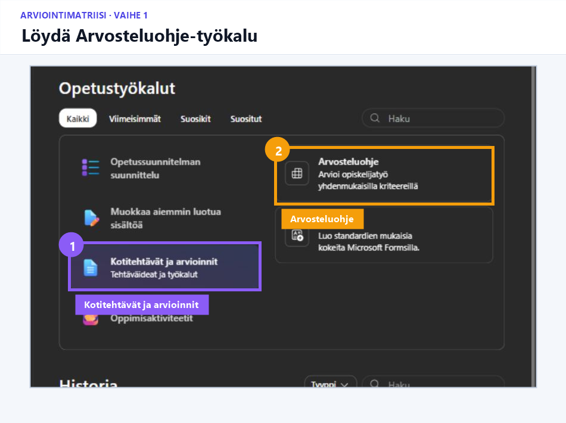
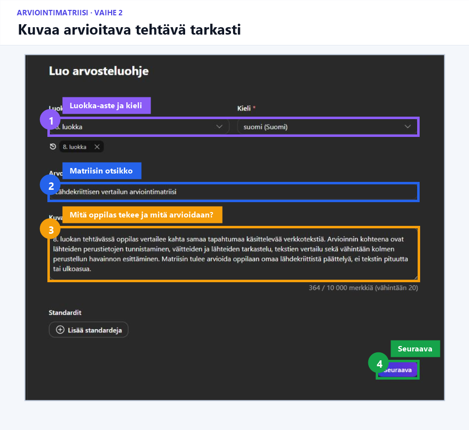
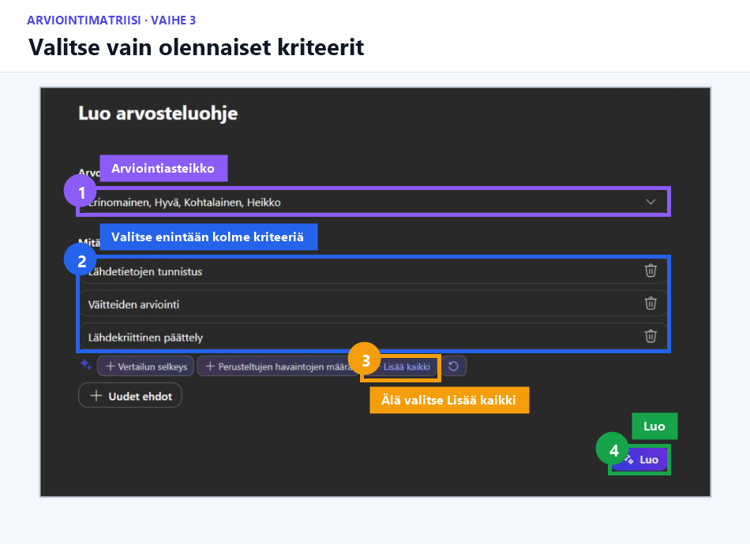
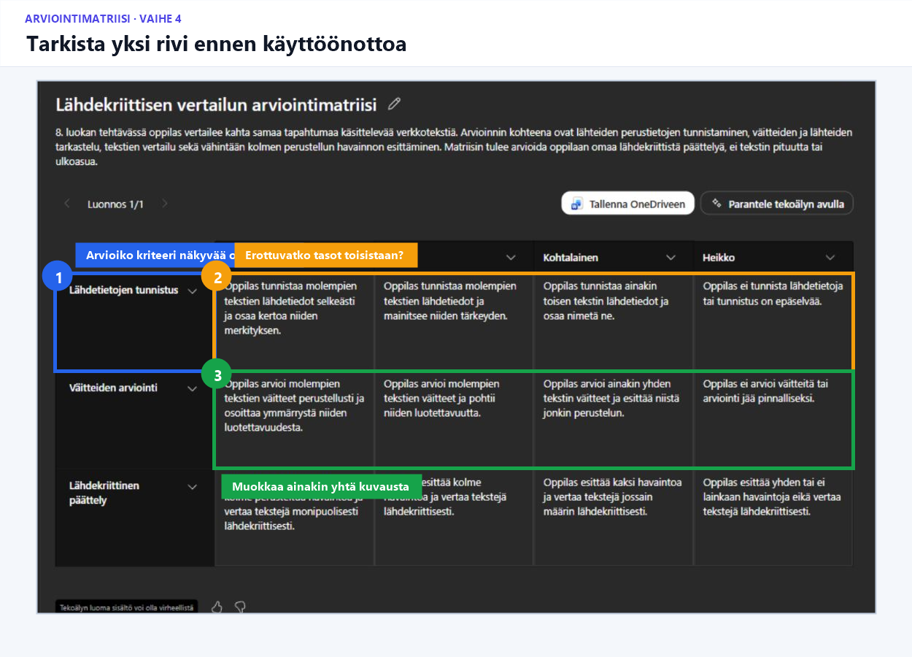

Harjoitus 2 · Pareittain · 14 min
Arviointimatriisin luonnostelu
Tavoite
Opit käyttämään Copilotia arviointimatriisin ensimmäisen luonnoksen tekemiseen ja tarkistamaan, mittaavatko kriteerit oikeaa osaamista.
VAIHE 1/5
Avaa työkalu
Valitse:
Opeta → Kotitehtävät ja arvioinnit → Arvosteluohje

VAIHE 2/5
Kuvaa arvioitava tehtävä
Valitse 8. luokka ja suomi.
Kirjoita otsikoksi:
Lähdekriittisen vertailun arviointimatriisi
Kopioi kuvaukseksi:
8. luokan tehtävässä oppilas vertailee kahta samaa tapahtumaa käsittelevää verkkotekstiä. Arvioinnin kohteena ovat lähteiden perustietojen tunnistaminen, väitteiden ja lähteiden tarkastelu, tekstien vertailu sekä vähintään kolmen perustellun havainnon esittäminen. Matriisin tulee arvioida oppilaan omaa lähdekriittistä päättelyä, ei tekstin pituutta tai ulkoasua.
Valitse Seuraava.

VAIHE 3/5
Valitse arviointikriteerit
Käytä asteikkoa:
Erinomainen – Hyvä – Kohtalainen – Heikko
Valitkaa vain nämä kolme kriteeriä:
- Lähdetietojen tunnistus
- Väitteiden arviointi
- Lähdekriittinen päättely
Älkää valitko Lisää kaikki. Valitkaa lopuksi Luo.

VAIHE 4/5
Tarkistakaa yksi kokonainen rivi
Valitkaa yksi arviointikriteeri ja lukekaa sen kaikki osaamistasot.
Tarkistakaa:
- Kuvaako kriteeri havaittavaa oppilaan osaamista?
- Arvioidaanko jokaisella tasolla samaa taitoa?
- Erottuvatko vierekkäiset tasot aidosti toisistaan?
- Perustuuko arviointi alkuperäiseen tehtävään?
- Onko heikoin taso kuvattu asiallisesti ja ymmärrettävästi?
Muokatkaa vähintään yhtä kuvausta ennen kuin hyväksyisitte matriisin käyttöön.

VAIHE 5/5
Valmistautukaa kertomaan
- yksi säilytettävä kriteeri
- yksi poistettava tai yhdistettävä kriteeri
- yksi korjaamanne tasokuvaus.
Ydinhavainto
Copilot luonnostelee matriisin, mutta opettaja päättää, mitä osaamista arvioidaan.